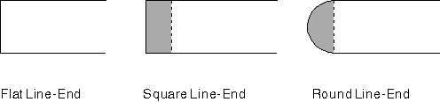

The line end attribute specifies the shape of the unattached end of a geometric line. Lines whose shapes are partially defined by a geometric width have to be closed, unlike cosmetic lines that simply end. An application can draw geometric lines with square, flat, or round ends.
Note: The end attribute takes effect only when a path is converted to a geometric width line using GpiStrokePath or GpiModifyPath.
Set the current geometric line end attribute with GpiSetLineEnd. The attribute applies to all subsequent unattached lines within the path bracket. The following table describes the three standard line ends provided by the PM programming interface; you cannot define your own end types.
Standard Geometric Line End Types
┌────────────────────────────────┬────────────────┬────────────┐ │Type │Identifier │Long Value │ ├────────────────────────────────┼────────────────┼────────────┤ │Flat, flush with line end │LINEEND_FLAT │1L │ ├────────────────────────────────┼────────────────┼────────────┤ │Round, past line end │LINEEND_ROUND │2L │ ├────────────────────────────────┼────────────────┼────────────┤ │Flat, but extends past line end │LINEEND_SQUARE │3L │ └────────────────────────────────┴────────────────┴────────────┘
The default line end type (LINEEND_DEFAULT) is identical to the LINEEND_FLAT type, and has a long value of 0L. The error linetype (LINEEND_ERROR) has a long value of -1L.
The following figure illustrates these three types of line ends. Your application can determine the current geometric line end by calling GpiQueryLineEnd.

Closing Unattached Geometric Lines
A square line end extends the line by a distance that is half the width of the line. For example, if the line is six coordinate units wide, a square line end extends it by three coordinate units.
A round line end is constructed by drawing a circle whose radius is half the width of the line.